Little Known Heroes
In June-July 2011, I was a summer intern at Quicksand Design Studio. I worked with Christopher Dame to develop a set of collective toys. The idea was to explore Indian traditional toy craft and blend it with the Urban Vinyl toy style, for a target audience of people covering mostly artist and individuals with creative and aesthetic edge.
I was involved with the conceptualization of character lines, development of form & characters and the production of toys. These toys are based on the anthropomorphic characters of Hindu mythology, illustrated in terms various stories they are associated with.
The project has been documented at every step in the form of a blog.
 The final characters for the set of toys. The characters are Vasuki, Garuda, Jatayu, Sharabha, Bali & Jambavan (left to right). There were two color ways; standard and chase.
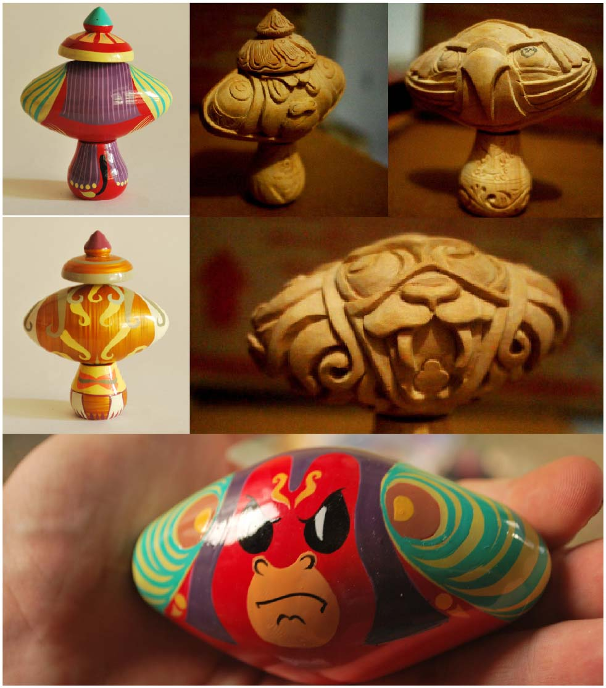
The final characters for the set of toys. The characters are Vasuki, Garuda, Jatayu, Sharabha, Bali & Jambavan (left to right). There were two color ways; standard and chase.
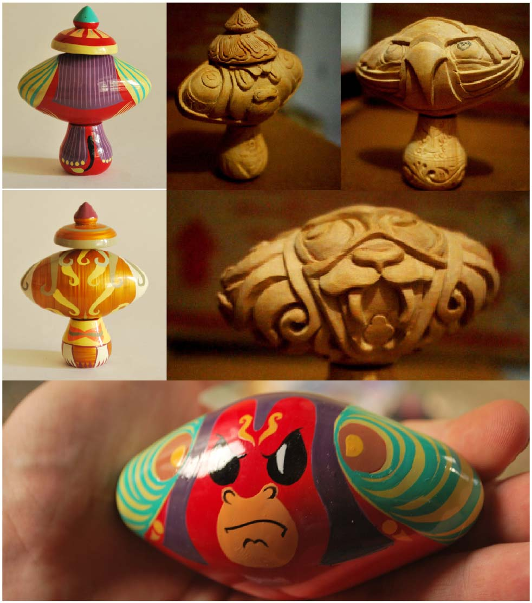
 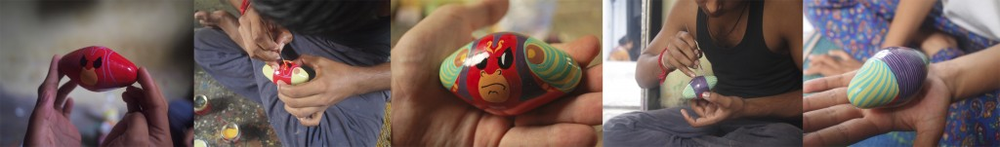
The toys are carved from wood, painted with lac (which is made from tree sap), and polished with tree leaves. They were then intricately hand painted by traditional craftsmen of Banaras.
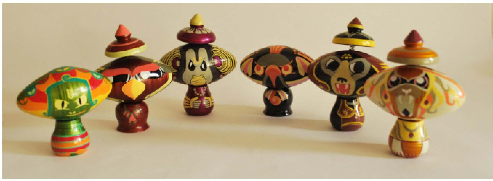
The standard set of our adorably lethal half-animal warriors.
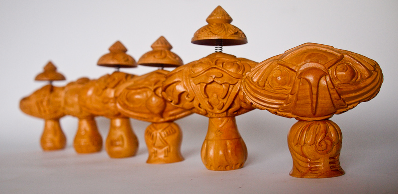
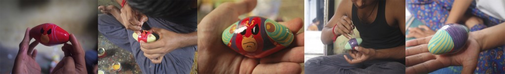
The toys are carved from wood, painted with lac (which is made from tree sap), and polished with tree leaves. They were then intricately hand painted by traditional craftsmen of Banaras.
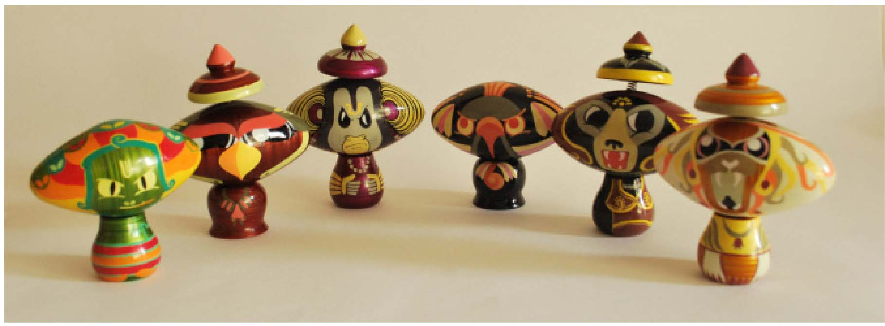
The standard set of our adorably lethal half-animal warriors.
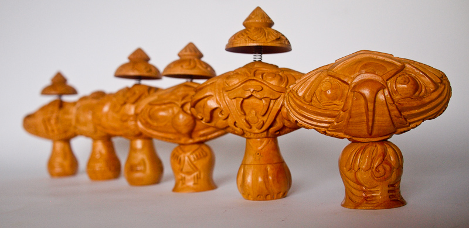
 We got all the characters in for a collector's carved edition. Every little detail of these characters is gorgeous, down to the intricate work on their crowns.
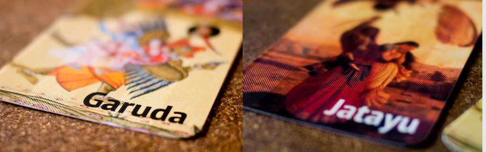
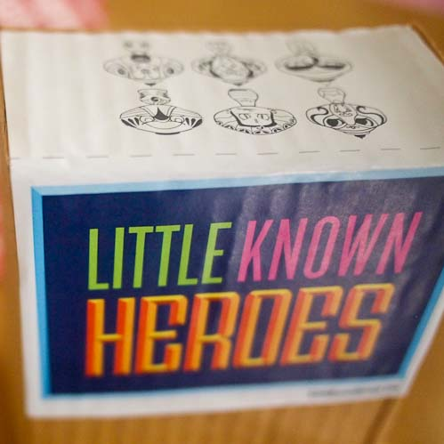
These toys were packaged in small cardboard boxes with a story-card inside. Each card shows a classic piece of art of the character, so you can see what they looked like before we got our hands on them and made them an adorably lethal warrior. On the opposite side, you get the story of your character. Who they are, why they are awesome, and a story that tells you about how significant they are.
We got all the characters in for a collector's carved edition. Every little detail of these characters is gorgeous, down to the intricate work on their crowns.
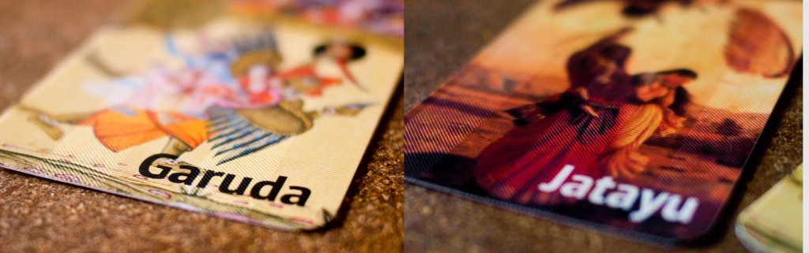
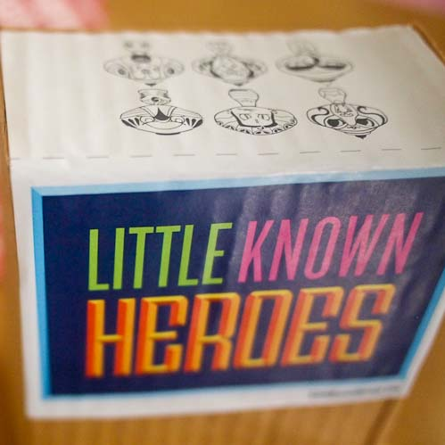
These toys were packaged in small cardboard boxes with a story-card inside. Each card shows a classic piece of art of the character, so you can see what they looked like before we got our hands on them and made them an adorably lethal warrior. On the opposite side, you get the story of your character. Who they are, why they are awesome, and a story that tells you about how significant they are.